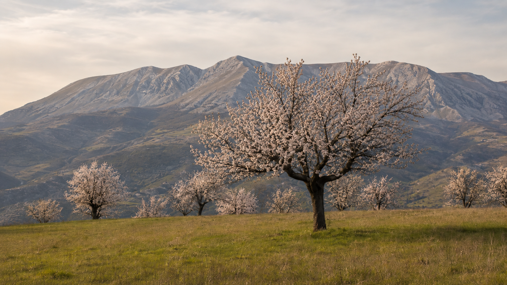

Saggio
Storia di un paesaggio nato dal lavoro, divenuto lentamente inutile e rimasto vivo nella croccante di Forme
AI Haiku Gaea
2026
A Forme i mandorli sono talmente numerosi da sembrare parte spontanea del paesaggio.
Si incontrano nei campi, lungo i pendii, ai margini dei terreni e vicino ai vecchi muri a secco. Alcuni continuano a fiorire nonostante l'età e l'abbandono; altri sono stati potati drasticamente, tagliati oppure inglobati in spazi che nel tempo hanno cambiato funzione.
Proprio perché li abbiamo sempre visti, potremmo pensare che siano cresciuti da soli.
Non è così.
Quel paesaggio non nacque per caso. Fu costruito lentamente da generazioni di persone che piantarono, curarono e riprodussero i mandorli perché rappresentavano una risorsa adatta a un territorio difficile.
Io, però, i mandorli non li ho conosciuti come patrimonio agricolo, biodiversità o elemento del paesaggio.
Li ho conosciuti da ragazzo.
Prima arrivavano i mannolicchi, le mandorle ancora giovani, racchiuse in un guscio morbido che si poteva aprire con le mani. Le raccoglievamo e le mangiavamo direttamente sotto gli alberi. Più avanti maturavano le mandorle vere e proprie, protette da gusci sempre più duri. Ogni albero aveva i propri frutti, leggermente diversi dagli altri, e ogni tanto capitava di incontrarne uno amaro: lo si scopriva soltanto dopo averlo messo in bocca.
Nel terreno di mio nonno, proprio accanto alla casa nella quale vivo oggi, ricordo soprattutto due mandorli.
Uno era mastodontico. Grande, alto, quasi inaccessibile. Non ricordo di averlo mai scalato: lo guardavo dal basso come si osserva qualcosa che appartiene a un mondo più grande del nostro.
L'altro era completamente diverso. Il tronco, crescendo, si era piegato fino quasi ad adagiarsi sul terreno. Era il punto perfetto dal quale iniziare l'arrampicata. Bastava salirvi sopra e seguire lentamente la curva del legno per ritrovarsi tra i rami.
Su quell'albero avrei voluto costruire una casetta.
Era uno di quei progetti dell'infanzia che sembrano sempre sul punto di cominciare e che poi non si realizzano mai. La casetta non venne costruita, ma il desiderio è rimasto legato a quel tronco, a quei rami e alla sensazione che un albero potesse diventare un rifugio.
Forse anche per questo amo ancora oggi i mandorli.
Non soltanto per la loro fioritura, per le mandorle o per la storia che raccontano. Li amo perché appartengono a una parte della mia vita nella quale il paesaggio non era qualcosa da osservare: era un luogo da mangiare, scalare, esplorare e abitare con l'immaginazione.
So bene che oggi quei mandorli non sono più quelli di allora.
Molti sono vecchi, malati o abbandonati. I terreni hanno perso la funzione che possedevano, raccogliere le mandorle non è più conveniente e il paese non vive più del lavoro che per generazioni aveva mantenuto quegli alberi in vita.
Ma proprio perché comprendo che non possiamo semplicemente tornare indietro, sento ancora più forte il bisogno di ricordare che cosa furono.
Prima di diventare alberi inutilizzati, legna da ardere o ostacoli da rimuovere, i mandorli sono stati cibo, lavoro, gioco, commercio, dolci, infanzia e paesaggio.
Sono stati una parte della vita di Forme.
Stabilire il momento preciso nel quale il mandorlo iniziò a diffondersi a Forme non è semplice.
Esistono però alcune tracce.
Già lo scrittore romano Silio Italico descriveva i campi intorno ad Alba Fucens come ricchi di alberi da frutto nonostante la povertà del terreno, senza però precisarne le specie. Una testimonianza più esplicita compare nell'Historia Marsorum dell'abate Muzio Febonio, scritta nel Seicento, nella quale vengono ricordati mandorli di due qualità provenienti da Taranto: una a guscio duro e una a guscio fragile.
Non basta per affermare con certezza quando il mandorlo arrivò proprio a Forme. Permette però di dire che la sua presenza nel territorio marsicano ha radici lontane.
È possibile che alla sua diffusione abbiano contribuito anche gli spostamenti legati alla transumanza tra l'Abruzzo e il Tavoliere delle Puglie. Insieme agli uomini e alle greggi potevano viaggiare semi, conoscenze agricole e nuove varietà. Si tratta di un'ipotesi plausibile riportata nella relazione dedicata ai mandorli di Forme, non di una certezza storica definitivamente dimostrata.
Ciò che conosciamo meglio è il modo in cui gli abitanti li riproducevano.
A Forme i mandorli venivano tradizionalmente ottenuti dal seme.
Nel mese di novembre si preparavano piccoli vivai in pieno campo chiamati piantinari, generalmente collocati nei terreni più fertili e con maggiore disponibilità d'acqua. In ogni buca venivano poste due o tre mandorle. Dopo due o tre anni, le giovani piante venivano espiantate e trasferite nei terreni definitivi, mantenendo ampie distanze tra un albero e l'altro.
Non essendo riprodotti attraverso l'innesto di una sola varietà selezionata, gli alberi non erano tutti uguali.
Da un seme può nascere una pianta con caratteristiche differenti da quella che lo ha prodotto. Nel corso delle generazioni si formò così una popolazione molto varia: mandorle tonde, schiacciate, appuntite, più facili o più difficili da rompere.
I nomi non provenivano da cataloghi botanici, ma dall'osservazione quotidiana: scrocchiarelle, schiacciate, tonde, doppione, pizzute.
Questa diversità, che un tempo poteva apparire soltanto come una normale caratteristica della produzione contadina, oggi rappresenta un patrimonio genetico e agricolo particolare.
La sua diffusione si comprende osservando il territorio.
Il mandorlo è una pianta rustica. Riesce a vivere nei terreni aridi, sassosi e calcarei, sopporta forti escursioni termiche e può utilizzare suoli nei quali altre coltivazioni avrebbero avuto maggiori difficoltà.
Alle pendici del Velino e della Magnola trovò quindi un ambiente severo, ma compatibile con le sue caratteristiche. La relazione elaborata dall'Associazione culturale Quiss' e lle Forme descrive un'area di circa duecento ettari nella quale erano presenti migliaia di esemplari, distribuiti tra pascoli, coltivazioni e terreni marginali.
Quegli alberi non avevano una sola funzione.
Le mandorle venivano raccolte generalmente nel mese di ottobre. Una parte era destinata al consumo familiare e alla preparazione della croccante, degli amaretti, delle ferratelle, dei nucci atterrati e di altri dolci. Un'altra parte veniva venduta.
Fino alla metà degli anni Settanta, secondo le testimonianze raccolte localmente, le mandorle di Forme venivano acquistate anche da commercianti di Sulmona per la produzione dei confetti.
Persino ciò che restava dopo il consumo aveva un'utilità.
Il legno di mandorlo bruciava bene; anche i gusci e il mallo potevano essere usati come combustibile. Le piante ormai vecchie venivano quindi rimosse, ma all'interno di un sistema nel quale altri alberi venivano continuamente messi a dimora.
Il taglio non coincideva necessariamente con la distruzione del patrimonio: poteva far parte del suo rinnovamento.
Quel mondo rimase in piedi finché il lavoro necessario per curare gli alberi aveva una ragione.
Bisognava preparare i semenzai, mettere a dimora le piante, potarle, raccogliere i frutti, eliminare il mallo, farli asciugare e rompere gusci spesso molto duri.
Era un lavoro lungo, ma produceva cibo, una piccola entrata economica e combustibile.
Poi il paese, come tutta la società rurale, cambiò.
Molte attività agricole persero convenienza. Le famiglie diminuirono, parte della popolazione si trasferì altrove, i prodotti un tempo ricavati direttamente dai campi divennero facilmente acquistabili. Il tempo impiegato nella raccolta e nella lavorazione delle mandorle iniziò a valere più del prodotto ottenuto.
Non furono necessariamente gli uomini di oggi a decidere che i mandorli non servivano più.
La loro utilità si era già indebolita attraverso trasformazioni economiche e sociali iniziate molto prima. La generazione attuale ha ricevuto spesso alberi anziani, terreni non più coltivati e un'attività che non garantiva più il valore di un tempo.
Il taglio che vediamo oggi è quindi l'ultimo gesto visibile di una storia cominciata decenni fa.
Questo non significa che ogni abbattimento sia inevitabile o giustificato. Significa però che attribuire tutta la responsabilità alle persone che oggi vivono a Forme sarebbe troppo semplice.
Non sono stati soltanto gli alberi a cambiare. È venuto meno il mondo che rendeva necessaria la loro esistenza.
La consapevolezza del rischio non è mancata.
Nel 2012 fu avviato il percorso del progetto "Il Mandorlo alle falde del Velino", curato dall'Associazione culturale Quiss' e lle Forme. Furono raccolti e selezionati semi provenienti dagli alberi locali, affidati al vivaio forestale regionale Mammarella dell'Aquila per produrre migliaia di giovani piante.
Il progetto prevedeva il reinserimento di circa quattromila mandorli autoctoni nel territorio di Forme, coinvolgendo agricoltori, cittadini e associazioni. Non si pensava soltanto alla piantumazione, ma anche alla mappatura degli alberi, alla formazione sulla potatura, alla creazione di percorsi dedicati e alla valorizzazione della croccante e degli altri dolci tradizionali.
Non ho trovato una documentazione pubblica completa che permetta di stabilire quanti alberi siano stati effettivamente piantati e quanti siano sopravvissuti.
Rimane però un fatto importante: più di dieci anni fa, proprio all'interno del paese, qualcuno aveva già compreso che i mandorli non erano soltanto vecchie piante, ma una parte del patrimonio di Forme.
Se oggi possiamo ancora parlare di questa storia, una parte del merito appartiene alla Sagra della Croccante.
Ogni anno le mandorle tornano al centro del paese. Non soltanto come ingrediente, ma attraverso un lavoro collettivo che trasforma zucchero, miele e mandorle in forme artistiche sempre diverse.
La festa non ha potuto arrestare da sola l'abbandono dei campi. Non poteva restituire automaticamente convenienza economica alla coltivazione e neppure obbligare i proprietari a mantenere ogni vecchio albero.
Ha però ottenuto qualcosa che non era affatto scontato: ha impedito che scomparisse anche il ricordo.
La croccante continua a raccontare, ogni 17 agosto, che Forme è stato il paese dei mandorli.
Per questo la generazione attuale non merita soltanto rimproveri. Merita anche il riconoscimento di avere mantenuto viva una tradizione capace di riunire il paese e di riportare ogni anno l'attenzione su un frutto che altrimenti sarebbe potuto diventare soltanto una memoria privata.
Non è realistico immaginare che Forme possa tornare esattamente al paesaggio e all'economia di un secolo fa.
Non possiamo chiedere alle persone di riprendere un lavoro faticoso soltanto perché veniva svolto dai loro antenati. E non tutti i mandorli esistenti possono essere salvati: alcuni sono malati, troppo vecchi o collocati in luoghi nei quali il territorio ha ormai assunto una funzione diversa.
Ma tra il ritorno impossibile al passato e la scomparsa completa esiste una strada.
Si potrebbero censire gli esemplari ancora presenti, individuare quelli più antichi e caratteristici, raccoglierne i semi, piantare ogni anno nuovi alberi e collegare sempre più chiaramente la Sagra alla tutela del paesaggio che l'ha generata.
Non servirebbe ricostruire immediatamente migliaia di piante.
Potrebbe bastare cominciare.
Un mandorlo nuovo per ogni famiglia, per ogni bambino nato, per ogni edizione della festa. Un piccolo mandorleto pubblico. Un percorso tra gli alberi superstiti. Una raccolta delle testimonianze di chi ancora ricorda come si coltivavano e si lavoravano le mandorle.
La Sagra ha conservato il racconto.
Ora quel racconto potrebbe tornare a produrre alberi.
Non per accusare chi è venuto dopo, né per fingere che il tempo possa essere riavvolto. Ma perché un paese non è costretto a scegliere tra vivere nel passato e cancellarlo.
Può portarne con sé una parte, affidandola al futuro.
Quando i mandorli erano una ricchezza
Storia di un paesaggio nato dal lavoro, divenuto lentamente inutile e rimasto vivo nella croccante di Forme
AI Haiku Gaea
2026
Scritto in dialogo con l'intelligenza artificiale
Licenza CC-0 — Dominio pubblico
Nessun diritto riservato.
Copia, adatta, redistribuisci, senza chiedere permesso.
∞
Quando i mandorli erano una ricchezza